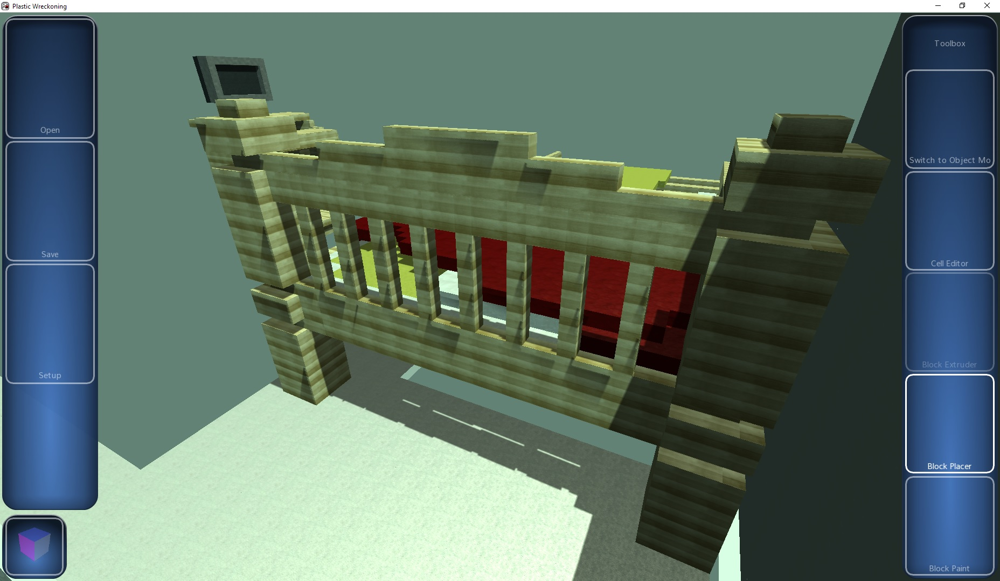

As a final-year-project during college, I developed a prototype 3D turn-based game inspired by Worms 3D, Hogs of War and Small Soldiers focusing on toys battling for dominance following the fall of mankind.
It was written in C with models and textures created using Blender and GIMP.
Some of the internal features included multithreaded loading and generation of meshes, which would merge faces with the same material to reduce the polygon count.
It was intended to be played on the then-popular netbooks and as such despite including normal mapping, per-pixel lighting and depth buffer shadows, could scale back to fixed function pieline rendering.
It included a level editor, and character customization by mixing-and-matching limbs, bodies and heads.
